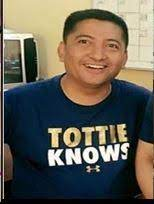

| Elementary | Centro Escolar University
Mendiola, Manila |
1976 - 1982 |
| High School | National Teachers College
J. Nepomuceno Street, Manila |
1982 - 1986
(graduated March 1986) |
| Bachelor of Science in Computer Engineering
S.O. (B) No. 3-17:1836 s. 1992 dated April 6, 1992 |
Adamson University
San Marcelino, Manila |
1986 - 1992 | Master of Arts in Teaching
S.O. (C) No. 1-02-0216 s. 1996 dated Oct. 22, 1996 |
Centro Escolar University
Mendiola, Manila |
1993 - 1996 |
| Master in Information Technology (M.I.T.)
(completed 27 units) |
Far Eastern University – East Asia College
Nicanor Reyes Street, Manila |
2010 - present |
| Doctor of Education (Ed.D.)
S.O. (C) No. 90-145001-0081 s. 2013 dated July. 19, 2013 |
National Teachers College
J. Nepomuceno Street, Manila |
1997 - 2013
(graduated March 23, 2013) |